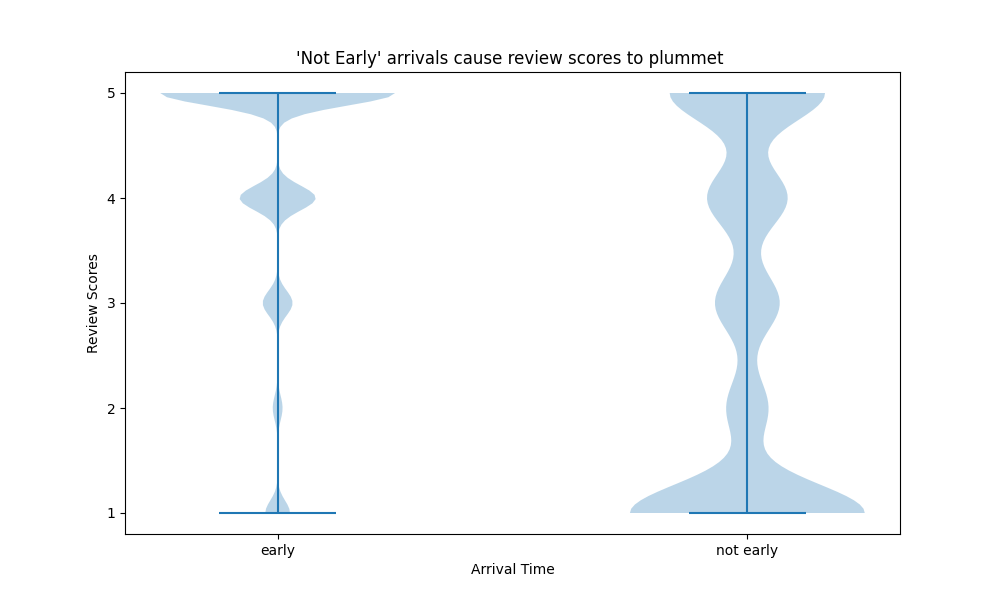
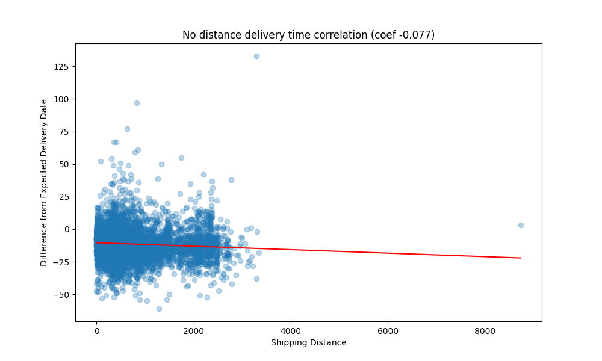
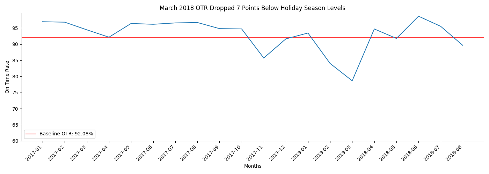
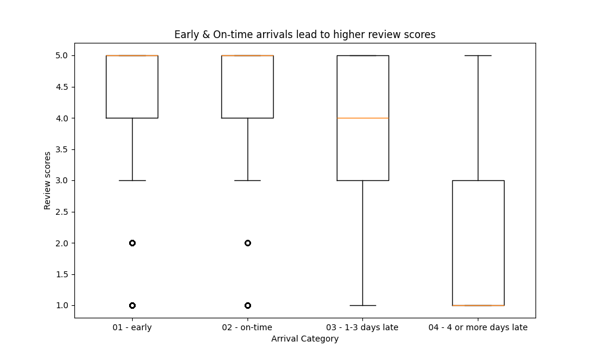

Does delivery timing relative to estimated dates drive measurable drops in customer satisfaction? An empirical investigation into 96,470 Brazilian e-commerce orders.
Download Executive Report (PDF) ⌥ SQL Queries ⌥ Python Scripts ← PortfolioE-commerce operations frequently treat delivery speed as a monolithic metric: faster is always better. However, customer satisfaction is often anchored not to absolute calendar days, but to commitments kept versus commitments broken.
This analysis leverages the Olist public dataset to evaluate how arrival timing relative to the promised estimated delivery date impacts customer review scoring. The raw dataset was profiled, filtered to delivered orders, and cleaned of approximately 3,000 postal code inconsistencies (~2% of records), establishing a high-integrity analytical cohort of 96,470 orders.
Across the platform, fulfillment operations maintain a strong 92.08% baseline on-time delivery rate. When packages arrive ahead of schedule, customer ratings remain consistently high at an average of 4.30 out of 5.
However, the impact of delays is non-linear. Minor delays (1–3 days late) show moderate rating resilience (median score 4.0), but once a package exceeds 4 days past the estimated delivery date, customer satisfaction collapses to an average 1.93 rating (with a median of 1.0).

Crucially, operations cannot blame geography alone: a Pearson correlation test between customer-to-seller distance and delivery variance against promise yielded r = -0.077. Physical distance is virtually uncorrelated with missing promised delivery windows. Regional performance disparities exist—such as Maranhão (MA) exhibiting a 77% OTR (~15 points below baseline)—but fulfillment variance is driven by process breakdowns and localized logistics bottlenecks rather than mileage.

Because shipping cost relative to freight weight also showed no direct correlation with delays, the diagnostic turned to merchant operational health. A weighted composite index was engineered to tier sellers into clear operational segments:
Composite Score = (Volume Index × 0.45) + (OTR Index × 0.40) + (Review Score Index × 0.15)
This multi-criteria segmentation balances fulfillment consistency against pure transaction volume, preventing high-volume sellers with chronic fulfillment issues from masquerading as top platform partners while highlighting high-reliability regional merchants.
While Q4 holiday peak season experiences expected fulfillment pressure (with OTR dipping to 88.47%, roughly 3.6 percentage points below baseline), the historical timeline revealed a much more severe operational anomaly in March 2018.

The data clearly surfaces a 78.6% OTR collapse in March 2018. The dataset itself is silent on the root mechanism (e.g., regional carrier strikes, carrier system migrations, or severe climatic disruption). This is documented as an operational anomaly requiring broader contextual records.
Because customer review scores are ordinal and heavily skewed toward 5-star ratings, standard parametric assumptions (ANOVA / t-tests) were rejected in favor of non-parametric hypothesis testing.

Both the 4-tier Kruskal-Wallis test (H = 10,089, p < 0.001) and the two-sample Mann-Whitney U test confirmed that the differences in review scores across delivery timing groups are statistically significant and not artifacts of random sampling variation.
This study reflects Brazilian e-commerce logistics between September 2016 and August 2018. Generalization to other geographic territories or modern logistics ecosystems should not be assumed.
Statistical tests demonstrate a strong association between late delivery and lower customer sentiment. However, observational data cannot isolate whether unobserved variables (e.g., product damage during transit or customer support friction) contributed to the lower rating alongside the delay.
The dataset records purchase, approval, carrier pickup, estimated date, and customer receipt dates. It does not contain intermediate hub tracking scans, carrier handoff delays, or customs holds that pinpoint exactly where in the fulfillment chain delays originated.